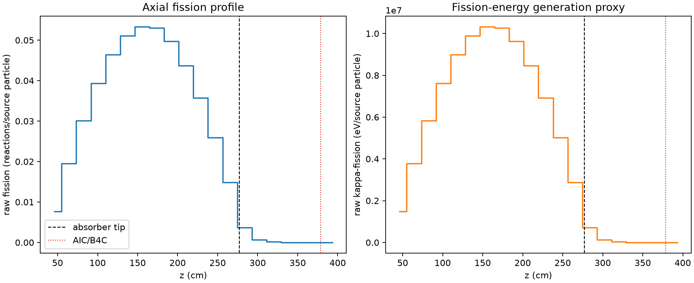
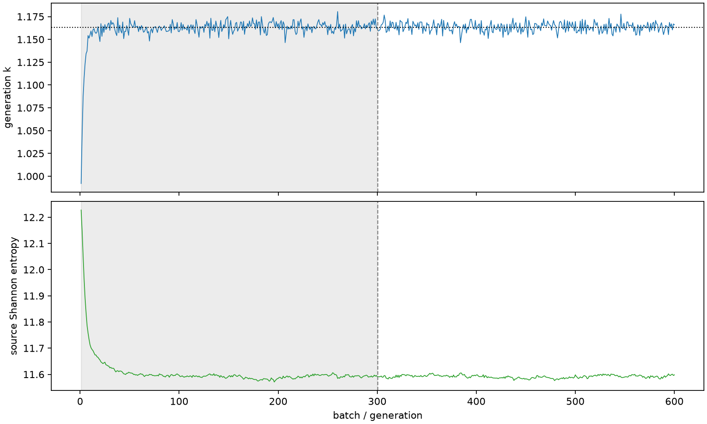

| field | value |
|---|---|
| experiment | V2-STAGE_256_OGRENCI_01-0012 |
| k | 1.1633652967093702 |
| MC standard error | 0.00019798540789651384 |
| seconds | 1086.822983460006 |
| acceptance | not_assessed |
| convergence | review_required |
Completed is output integrity only; physical and statistical review required. Zero tallies do not prove zero production or zero uncertainty.
| diagnostic | value |
|---|---|
| geometric fuel voxels | 5280 |
| zero fission tally voxels | 85 |
| low signal fuel voxels | 1031 |
| low signal fission share | 7.830778540913602e-05 |
| low signal kappa share | 7.834954745432434e-05 |
| important fission share | 0.9501050739223136 |
| previous filter included | 4249 |
| duration estimate s | 1562.5173488400023 |
| actual minus estimate s | -475.69436537999627 |
| fission relative MC error | statistics |
|---|---|
| all_geometric_fuel | {"voxels": 5280, "positive_mean_voxels": 5195, "zero_mean_voxels": 85, "undefined_relative_error_voxels": 85, "median": 0.009901188401914184, "p95": 0.7805063895776844, "maximum": 1.0000000000000002} |
| low_signal | {"voxels": 1031, "positive_mean_voxels": 946, "zero_mean_voxels": 85, "undefined_relative_error_voxels": 85, "median": 0.5383757508547028, "p95": 1.0, "maximum": 1.0000000000000002} |
| important_95pct | {"voxels": 2962, "positive_mean_voxels": 2962, "zero_mean_voxels": 0, "undefined_relative_error_voxels": 0, "median": 0.007377810780604217, "p95": 0.011003253465986114, "maximum": 0.013692582234951779} |
| outside_previous_filter | {"voxels": 1031, "positive_mean_voxels": 946, "zero_mean_voxels": 85, "undefined_relative_error_voxels": 85, "median": 0.5383757508547028, "p95": 1.0, "maximum": 1.0000000000000002} |
| kappa_fission relative MC error | statistics |
|---|---|
| all_geometric_fuel | {"voxels": 5280, "positive_mean_voxels": 5195, "zero_mean_voxels": 85, "undefined_relative_error_voxels": 85, "median": 0.009891213940787291, "p95": 0.7813710516036021, "maximum": 1.0000000000000002} |
| low_signal | {"voxels": 1031, "positive_mean_voxels": 946, "zero_mean_voxels": 85, "undefined_relative_error_voxels": 85, "median": 0.5380437572293566, "p95": 1.0, "maximum": 1.0000000000000002} |
| important_95pct | {"voxels": 2962, "positive_mean_voxels": 2962, "zero_mean_voxels": 0, "undefined_relative_error_voxels": 0, "median": 0.00736893504253764, "p95": 0.010991451852473568, "maximum": 0.013676095157889792} |
| outside_previous_filter | {"voxels": 1031, "positive_mean_voxels": 946, "zero_mean_voxels": 85, "undefined_relative_error_voxels": 85, "median": 0.5380437572293566, "p95": 1.0, "maximum": 1.0000000000000002} |
| axial bin | fission share | kappa-fission share |
|---|---|---|
| 1 | 0.016202908111035627 | 0.01620359293931193 |
| 2 | 0.04111620529226041 | 0.041116032674568766 |
| 3 | 0.0634078300950103 | 0.06340758581094309 |
| 4 | 0.08277908414881417 | 0.08277866851993165 |
| 5 | 0.09767250147055365 | 0.09767219707560212 |
| 6 | 0.10753833844272401 | 0.10753784466888172 |
| 7 | 0.11218135840185198 | 0.11218109417445099 |
| 8 | 0.11165478939603515 | 0.11165440513068774 |
| 9 | 0.10478833662370303 | 0.10478779166558329 |
| 10 | 0.09197999764449154 | 0.09197960984886319 |
| 11 | 0.07519186392561364 | 0.07519157418997123 |
| 12 | 0.05466030759238054 | 0.05466010221319919 |
| 13 | 0.03133183072337847 | 0.03133170838132596 |
| 14 | 0.0076730235391032665 | 0.007675308636383341 |
| 15 | 0.0014315834041648966 | 0.0014322524179364846 |
| 16 | 0.00030486979450246543 | 0.0003050145890416258 |
| 17 | 6.539559117592102e-05 | 6.543421266773844e-05 |
| 18 | 1.6572900004352565e-05 | 1.657776667474111e-05 |
| 19 | 2.764138066482047e-06 | 2.765962908386864e-06 |
| 20 | 4.3876513020782765e-07 | 4.3912106665919993e-07 |
Histories include the inactive-to-active transition at batch 300. kappa-fission approximates fission energy production, not total heat deposition.

